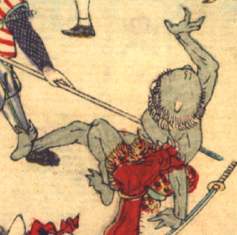

青黒い肌の鬼。頭頂部は禿げ上がり、中央に白い角が1本生えている。毛皮の腰布を着けている。槍に突かれて、腰から倒れこみ、左手を後ろに付いている。
著作者：David Thompson／出典：親書誌：U426_nichibunken_0116：Momotaro／日付：2006／資源識別子：U426_nichibunken_0116_0004_0006
Copyright (c)2010- International Research Center for Japanese Studies, Kyoto, Japan. All rights reserved.